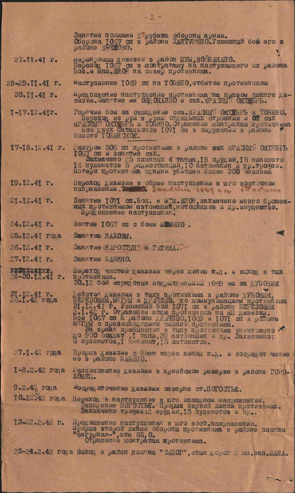

Исходное состояние и маркировка
До начала поиска на сайте было 50 карточек, включая 22 гипотетические, и 121 запись об источниках. Все 280 прежних признаков «нового» сняты; старые факты, люди, связи и источники сохранены. Прежние сводные находки доступны в обычном цвете. Зелёным и пометкой «НОВОЕ» отмечены только дополнения и уточнения этого исследования.
Как оценивалась эффективность
Пять зелёных записей на сайте: два исторических контекста и три обновлённых утверждения — пересмотр гипотезы о Степане, уточнение карточки Александра и новая зацепка по Михаилу. Отдельная строка «три проверки карточек» в таблице относится к музейной, морской и медицинской карточкам; это другая единица учёта, её не следует прибавлять к пяти записям.
| Показатель | Раунд 1 | Раунд 2 |
|---|---|---|
| Проверяемые исследовательские вопросы | 6 | 7 |
| Новые доказанные предки | 0 | 0 |
| Новые доказанные родственные связи | 0 | 0 |
| Новые личные биографические факты | 0 | 0 |
| Исторические контексты | 0 | 2 |
| Уточнения содержания/доступности источников | 3 группы архивных маршрутов | 3 проверки карточек |
Раунд 1 оказался полезен для подготовки точечных заказов, но не расширил доказанную родословную: ключевые оригиналы недоступны в открытом просмотре. Поэтому во втором раунде направление изменено. Раунд 2 дал один новый первичный военный документ для проекта и новый краеведческий контекст; он информативнее для семейной истории, но тоже не установил новых родственников.
Число просмотров, поисковых запросов и каталожных строк не использовано как показатель генеалогического успеха. Повторно прочитанные прежние документы, случайные однофамильцы и два экземпляра одной книги не засчитывались как независимые новые находки.
Раунд 1
Прямые предки: Лекма и Глинское; проверка наличия и доступности первичных книг; именной поиск.
| Вопрос | Что проверено и результат | Источники |
|---|---|---|
| R1-01 · Кузьма Шалагин: рождение 1848 | В официальной картотеке два экземпляра: д 34908 л 109–143 и д 14175 л 365–408; сканы требуют зарегистрированного платного доступа | ГАТО: метрическая книга Троицкой церкви Лекмы за 1848 г., приходский экземпляр — официальная картотека и страница дела ГАТО: метрическая книга Лекмы за 1848 г., консисторский экземпляр — официальная картотека и страница дела |
| R1-02 · Кузьма: состав семьи 1860 | Д 18232 л 310–330; альтернативный экземпляр 17983 л 242–260. ГАТО платный вход; FamilySearch CAPTCHA | ГАТО: исповедная ведомость Троицкой церкви Лекмы за 1860 г. — официальный листовой указатель |
| R1-03 · Степан/Евдокия: рождения 1898–1903 | Д 2812/2813 и листовые диапазоны подтверждены официально; записи о людях не прочитаны | ГАТО: официальный указатель метрических книг Лекмы за 1898–1903 гг. |
| R1-04 · Григорий/Прасковья: книги 1863–1873 | В 336 карточках поиска Лекма нет метрических книг этих лет; это пробел каталога, не доказательство утраты | ГАТО: поиск «Лекма» в межфондовой картотеке «Генеалогия», проверка 30.10.2026 |
| R1-05 · Андрей/Николай: Вауч 1879–1888 | Прямая ссылка Яндекс Архива на д 174 найдена; просмотр доступен только после входа | Яндекс Поиск по архивам: ссылка на ГАВО, ф. 496, оп. 66, д. 174 |
| R1-06 · Новые именные записи о прямых предках и боковых ветвях | Целевые веб-запросы не дали записей с достаточными признаками тождества; случайные однофамильцы не добавлены |
Раунд 2
После ограничений первого раунда: прочитать доступные военные оригиналы и индексы; проверить краеведческие свидетельства.
| Вопрос | Что проверено и результат | Источники |
|---|---|---|
| R2-01 · Михаил: Дорога памяти | Видимая биография даёт сокращённое имя, 1927 год и «призывник», без места рождения и родственников, портрета нет. В метаданных кнопки «Поделиться» (share-39059071) указан Пушкинский РВК, Московская область, Пушкинский район. Тождество с семейным Михаилом и архивное основание метаданных не доказаны. | «Дорога памяти» (1418museum.ru): Илюшкин Михаил Андреевич, 1927, призывник |
| R2-02 · Александр: морская карточка и именной список | Индексы прочитаны. Изображения не опубликованы; уточнён адрес оригинала: Архив ВМФ, Гатчина, шкаф 160, ящик 18; список ф 2201/35/44. Имя матери не раскрыто. | Картотека моряков (Архив ВМФ) и именной список 291 опулб Шкотовского сектора береговой обороны ТОФ |
| R2-03 · Степан: карточка ранения | Открытый индекс прочитан: 5.11.1941, ППГ 979, 1067 сп. Вкладка документов показывает место хранения, а не скан. Год рождения в открытом тексте не указан. | Картотека ранений (филиал ЦАМО военно-медицинских документов): Шалагин Степан Кузьмич, 1067 сп; год рождения в открытом индексе не указан |
| R2-04 · Степан: боевой контекст конца ноября 1941 | Впервые для проекта найдены и визуально прочитаны 2 из 6 образов документа «Боевой путь 311 сд»14.07.1942. Строка 27.11.1941 прямо называет район Шум—Войбокало и контратаку 1067 сп. Степан поимённо не назван. | «Боевой путь 311 сд», составлен 14.07.1942; прочитаны образы 1–2 из 6 на «Памяти народа» |
| R2-05 · Николай Андреевич: полный лист 1948 | Полный оригинальный лист прочитан повторно; новых сведений о родителях, детях или последней части не найдено. Прежний результат не засчитан как новая находка. | Именной список безвозвратных потерь Овинищенского РВК (донесение № 601 от 07.01.1948), строка 2 |
| R2-06 · Лекма и семья: краеведческая рукопись | Рукопись Соколовой прочитана; новых прямых именных упоминаний семьи нет. Добавлен контекст: школа ШКМ 1933 г., 190 учащихся 1934 г., Г.А.Пронин. Обучение бабушки/Лидии не доказано. | Г. М. Соколова. «История деревни Работкино и колхоза „13 лет Октября“» (по архиву Весьегонского района) |
| R2-07 · Трудовая биография и хутор Калининский | Целевые запросы по семье, работе и хутору не дали персональных документов; точное местоположение хутора не установлено. |
Новый первичный документ: 311 сд
«Боевой путь 311 сд», составлен 14 июля 1942 г.; ЦАМО, ф. 1619, оп. 1, д. 24. Визуально прочитаны первые два из шести образов. В строке 27 ноября 1941 г. на втором образе указаны район Шум—Войбокало и контратака 1067-го полка. Это уточняет прежний набор версий, опиравшийся в том числе на вторичные описания.
Граница вывода: Степан в этом документе поимённо не назван. Его возвращение в часть после эвакуации 5 ноября, точное место и дата исчезновения не установлены. События части нельзя автоматически приписывать конкретному бойцу.
Полный документ на «Памяти народа»


Следующие шаги исследования
Наибольшую отдачу даст получение конкретных оригиналов: рождения Степана (1898–1902), рождения Евдокии (1901–1903), её брака со Степаном, дворов Лекмы в ведомости 1860 г. и недостающего 1848 года. Для Илюшкиных — рождение Михаила 1927 г., похозяйственные книги и брак Андрея с Марией. Бесплатный именной веб-поиск уже даёт мало результата; дальнейшая работа должна опираться на сканы этих дел.
Условия доступа, увиденные в этом исследовании: ГАТО — вход и платный онлайн-просмотр; Яндекс Архив — вход в аккаунт; FamilySearch — CAPTCHA. Изображения морской и медицинской карточек на открытых страницах «Памяти народа» отсутствуют, показаны адреса хранения.
Готовый запрос о морской карточке Александра
Прошу сообщить возможность получения копии учётной карточки Илюшкина Александра Андреевича, 1920 г. р., Овинищенский РВК, поступление на службу в сентябре 1940 г., 291 отдельный пулемётный батальон Шкотовского сектора береговой обороны ТОФ. По открытому индексу: шкаф 160, ящик 18. Также прошу проверить именной список: ф. 2201, оп. 35, д. 44. Интересуют полные имена родителей, довоенный адрес и сведения о дальнейшем перемещении. При необходимости платных работ прошу предварительно сообщить стоимость.
Готовый запрос по Степану
Прошу сообщить возможность получения копии карточки и сведений о лечении Шалагина Степана Кузьмича (вариант отчества Кузмич), рядового 1067 стрелкового полка 311 стрелковой дивизии. Открытый индекс сообщает эвакуацию в тыл 05.11.1941, ППГ 979, картотека общего учёта, ящик 119-12. Годы рождения по другим документам расходятся: 1898–1902. Интересуют даты поступления и выбытия, направление дальнейшей эвакуации и сведения о возвращении в часть. Тождество медицинской записи с нашим родственником требуется проверить по месту рождения и родственникам.